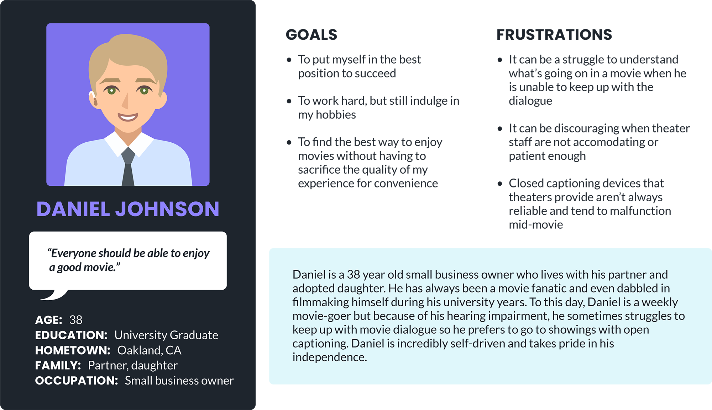
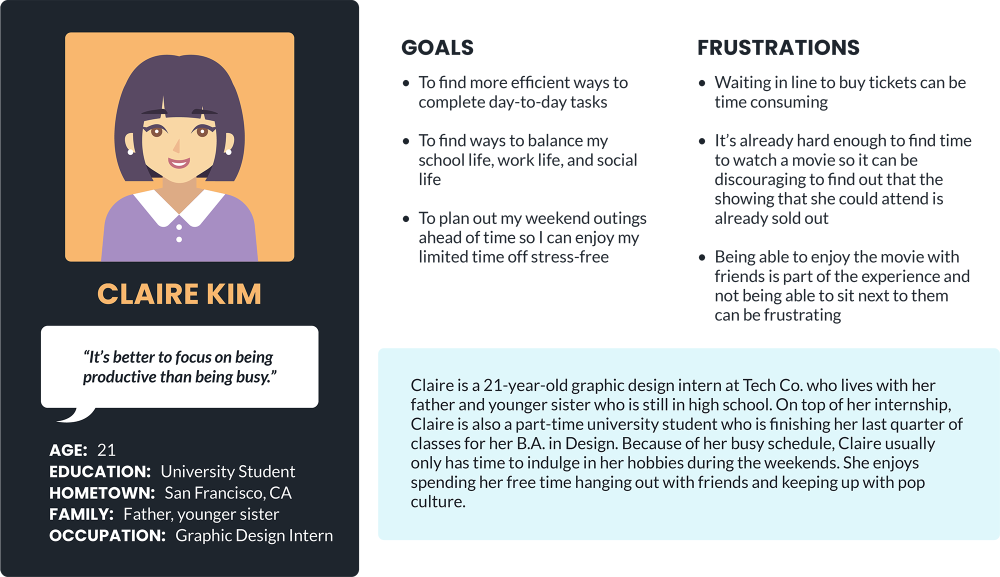
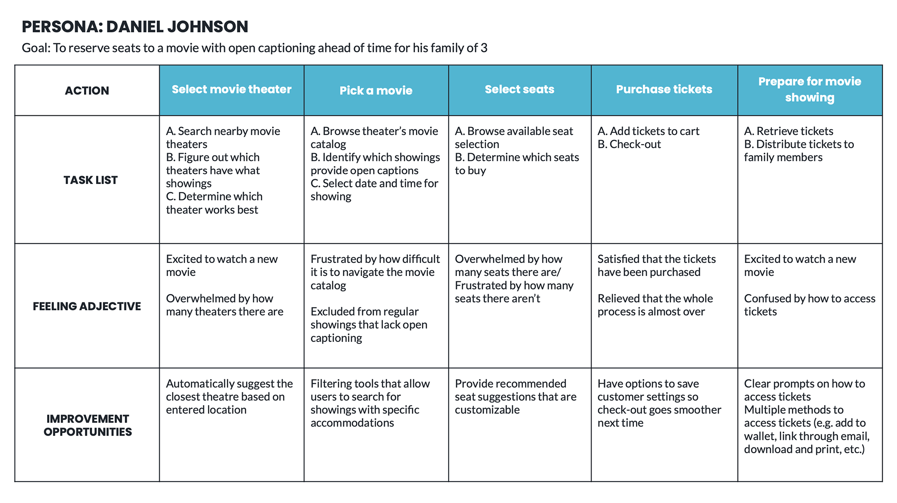
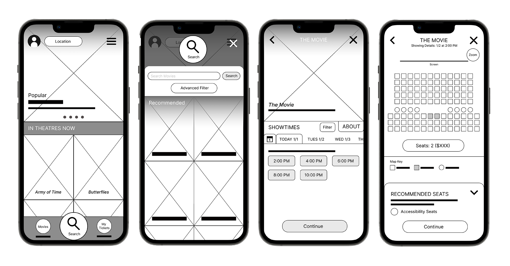
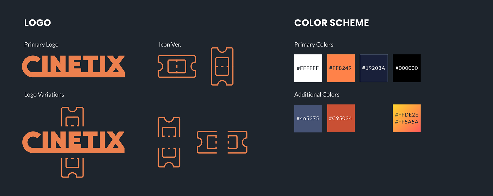
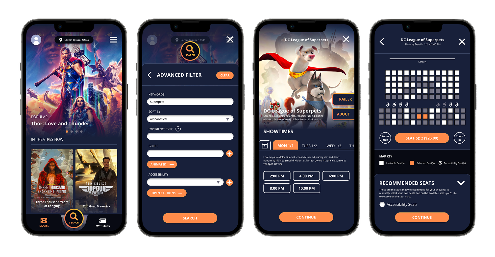
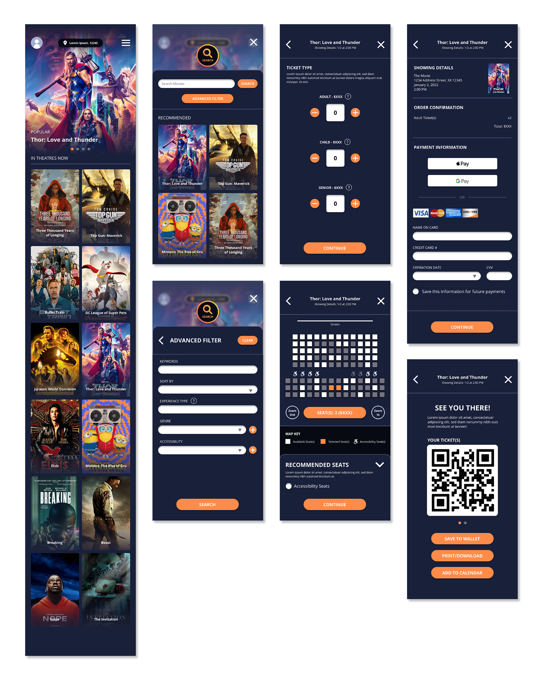

Project Overview
The Product
Cinetix is an app to aims to provide a quick and easy way for movie lovers to plan their next trip to the theatres.
Role
UI/UX Designer and Researcher
Project duration
July 2022 - October 2022
Tools
Figma, Adobe Illustrator, Adobe Photoshop
The Problem
While other movie ticket reservation apps are generally quite successful, they often have areas to improve on, especially when it comes to the customization of one’s user experience.
The Goal
Overall, the goal of Cinetix is to help the user find what they want to see and how they want to see it faster and with greater ease.
Research
Research Summary
In order to better understand the users that I’m designing for, I created empathy maps and conducted online research to get a better idea of how the movie theater experience can be improved especially for those with different abilities.
A primary user group I identified through research was individuals with hearing impairments that prefer showings with open captioning over using closed captioning devices due to the tendency for these assistive devices to malfunction mid-show.
Paint Point: Time
Waiting in line to purchase movie tickets at the theater can be time consuming.
Pain Point: Experience
Showing up to a theater only to realize that your entire party can’t sit together can worsen one’s experience.
Pain Point: Accessibility
Platforms for movie ticket reservations don’t always make it easy to access accommodations for all users.
Personas
Daniel Johnson is a small business owner and movie enthusiast who needs an easy way to reserve seats to a movie showing with open captioning because he does not want to compromise his movie watching experience for convenience.
Claire Kim is a busy a busy student and design intern who needs an efficient way to buy movie tickets for her and her friends because she wants to make sure they get the best seats before they’re sold out.
User Journey Map
Sketches & Wireframes
Ideation
During this process, I drafted iterations of the home screen as well as other screens of key features that I would like to include in my design and was able to get a better idea of how I might go about addressing user pain points.
Wireframes
Given that movies are visual mediums of storytelling, I wanted the home screen of Cinetix to reflect that, hence the gallery-esque layout.
And in order to prevent users from feeling overwhelmed by the amount of visuals present, I included a section that recommends popular movies and a button that allows users to search for specific movies.
Since time is one of the paint points that I wanted to address with my design, I drafted a “Recommended Seats” feature for my seat selection screen in hopes of making seat selection a more efficient process for the user.
This feature was inspired by similar concert ticketing features.
Low-Fidelity Prototype
Once I compeleted drafting the basic wireframes of my app, I began transforming the screens into a low-fidelity prototype to create a user flow for future user testing.
 View Lo-Fi PrototypeUsability Study
In order to test and garner some feedback to further improve my design, I conducted an unmoderated usability study. The study was conducted via a Google Form and I provided participants with tasks within my prototype to complete.
I found that users needed confirmation on their booking details and payment information before completing a purchase.
To address this, I added a "Showing Details" section that discloses relevant booking information on the check-out page.
Final Designs
Mockups
After updating my lo-fi prototype accordingly, I began refining my design and considering more of the visual aspects of Cinetix. The final high-fidelity prototype of Cinetix features even more accessibility considerations and provides the user with a greater approximation of how Cinetix would look and feel as a functioning app.
Design Elements

High-Fidelity Prototype
 View Hi-Fi Prototype Conclusions
Impact
Cinetix gives users a more customizable theater experience especially in terms of providing accessible options.
Takeaways
Design is very much an iterative process and I learned a lot while working on Cinetix. I learned that there are always ways to improve on one’s design and that even though a project can be deemed “complete” at a certain point, design is a ongoing process.